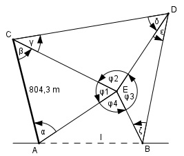

Aufgabe 186 Die Punkte A und B sollen durch einen Tunnel verbunden werden.Um dessen Länge l zu bestimmen, sind die waagerechte Länge AC = 804,3 m und die Horizontalwinkel α = 72,2°, β = 53,1°, γ = 31,9°, δ = 42°, ε = 30,2° und ζ = 45,5° gemessen worden. Berechnen Sie l.

φ1 = 180° - α – β = 180° - 72,2° - 53,1° = 54,7° φ2 = 180° - γ – δ = 180° - 31,9° - 42° = 106,1° φ3 = 180° - ε – ζ = 180° - 30,2° - 45,5° = 104,3° φ4 = 360° - φ1 - φ2 - φ3 = = 360° - 54,7° - 106,1° - 104,3° = 94,9° Im Dreieck AEC: Fall SWW: Sinussatz: 804,3 m CE ------------ = ------- |*sin α sin 54,7° sin α 804,3 m * sin α 804,3 m * sin 72,2° CE = ------------------ = --------------------- = sin 54,7° sin 54,7° 804,3 m * 0,9521 = ------------------- = 938,3 m 0,8161 Fall SWW: Sinussatz: Sinussatz: 804,3 m AE ----------- = ------- |*sin β sin 54,7° sin β 804,3 m * sin β 804,3 m * sin 53,1° AE = ------------------ = --------------------- = sin 54,7° sin 54,7° 804,3 m * 0,7997 = ------------------- = 788,1 m 0,8161 Im Dreieck CED : Fall SWW: CE ED --------- = ----------- |*sin 31,9° sin 42° sin 31,9° CE * sin 31,9° 938,3 m * 0,5284 ED = ---------------- = ------------------- = sin 42° 0,6691 = 741 m Im Dreieck EBD: ED BE ----------- = ----------- |*sin 30,2° sin 45,5° sin 30,2 741 m * sin 30,2° 741 m * 0,503 BE = ------------------- = ---------------- = sin 45,5° 0,7133 = 522,5 m Im Dreieck ABE: Fall SWS: Cosinussatz: l2 = AE2 + BE2 - 2 * AE * BE * cos φ4 l2 = 788,12 + 522,52 - 2*788,1*522,5*cos 94,9° l2 = 788,12 + 522,52 - 2*788,1*522,5*(-0,0854) l2 = 964 440,3 |√ l = 982,1 m